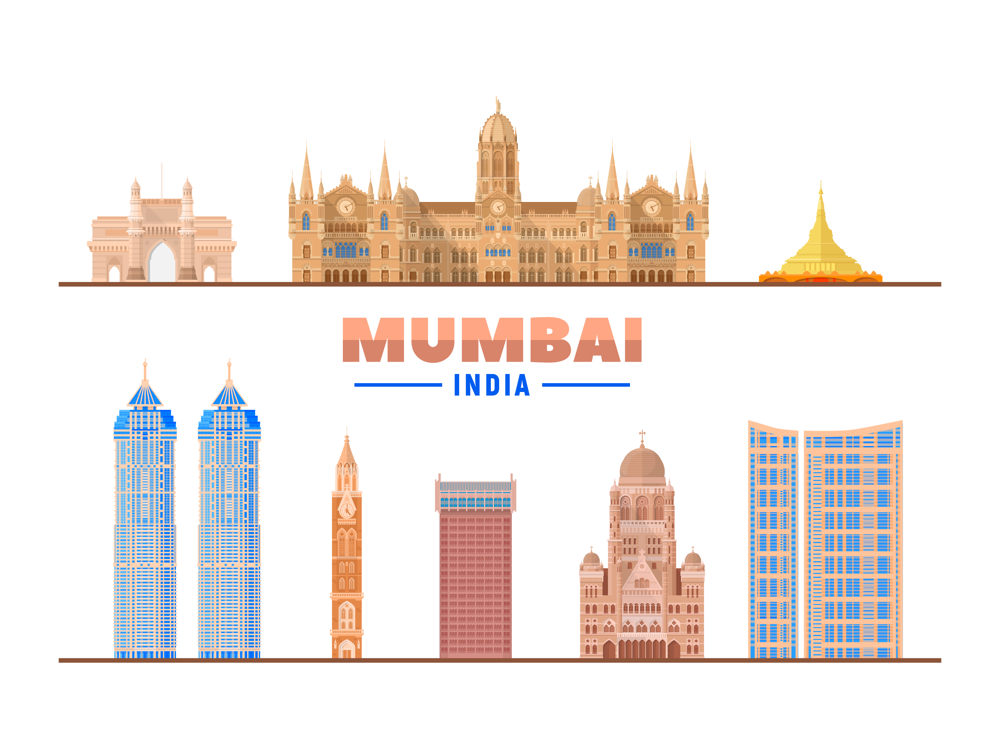

Your go-to place for technology insights, travel stories, and life adventures.
A Day in the Life of a Full-Stack Developer
Summary:
Discover what it’s like to be a full-stack developer. This post dives into the daily routines, challenges, and rewarding moments of working in this dynamic role, offering insights into the tools and technologies used.
Life of a Full-Stack Developer
My day kicks off with coffee and a code review, setting the stage for a productive session of coding in JavaScript and Node.js. Morning hours are dedicated to solving complex issues, like optimizing user interfaces and managing back-end databases. The afternoon is filled with team meetings and collaborative coding sessions, where we brainstorm solutions and refine our projects. Evenings are for winding down with code reviews and exploring new technologies through online courses and tech blogs. Balancing front-end and back-end tasks keeps every day dynamic and challenging, but it’s the thrill of creating impactful software that drives my passion in this ever-evolving field.
Mumbai Unfiltered: Embracing the Pulse of India's Maximum City
Summary:
Experience the vibrant energy of Mumbai, a city that never sleeps. This post delves into the daily life, unique challenges, and exhilarating moments of living in this bustling metropolis, highlighting the culture, diversity, and opportunities it offers.
Life in Mumbai:
My day begins with a cup of chai and a view of the city’s ever-bustling streets, preparing me for the hustle and bustle ahead. Mornings are spent navigating through the lively markets and crowded local trains, a true test of patience and resilience. The afternoons are filled with the cacophony of honking horns and the aroma of street food, a testament to Mumbai’s fast-paced lifestyle and rich culinary culture. Evenings bring a calm respite, often spent by the serene Marine Drive, reflecting on the day amidst the backdrop of the city’s iconic skyline. Balancing the chaos and charm of Mumbai keeps life vibrant and unpredictable, but it’s the spirit of the people and the endless opportunities that make this city truly captivating.

Global Political Landscape: The Shifts in 2024
Summary:
This post analyzes the key political changes and trends in 2024, examining the impact of major elections, policy shifts, and international relations on the global stage.
Gobal Political Landscap:
My day begins with a cup of chai and a view of the city’s ever-bustling streets, preparing me for the hustle and bustle ahead. Mornings are spent navigating through the lively markets and crowded local trains, a true test of patience and resilience. The afternoons are filled with the cacophony of honking horns and the aroma of street food, a testament to Mumbai’s fast-paced lifestyle and rich culinary culture. Evenings bring a calm respite, often spent by the serene Marine Drive, reflecting on the day amidst the backdrop of the city’s iconic skyline. Balancing the chaos and charm of Mumbai keeps life vibrant and unpredictable, but it’s the spirit of the people and the endless opportunities that make this city truly captivating.
Navigating Global Challenges in 2024
Summary:
Explore the major global issues of 2024, including economic crises, climate change, and international conflicts. This post delves into how countries and organizations are responding to these challenges.
Global Challenges:
My day begins with a cup of chai and a view of the city’s ever-bustling streets, preparing me for the hustle and bustle ahead. Mornings are spent navigating through the lively markets and crowded local trains, a true test of patience and resilience. The afternoons are filled with the cacophony of honking horns and the aroma of street food, a testament to Mumbai’s fast-paced lifestyle and rich culinary culture. Evenings bring a calm respite, often spent by the serene Marine Drive, reflecting on the day amidst the backdrop of the city’s iconic skyline. Balancing the chaos and charm of Mumbai keeps life vibrant and unpredictable, but it’s the spirit of the people and the endless opportunities that make this city truly captivating.
About Me
Hi, I’m Yogesh, a passionate explorer of technology and life’s adventures. Through my blog, I share insights on technology trends, travel experiences, and personal growth. Join me as I navigate the intersections of innovation, wanderlust, and self-discovery.